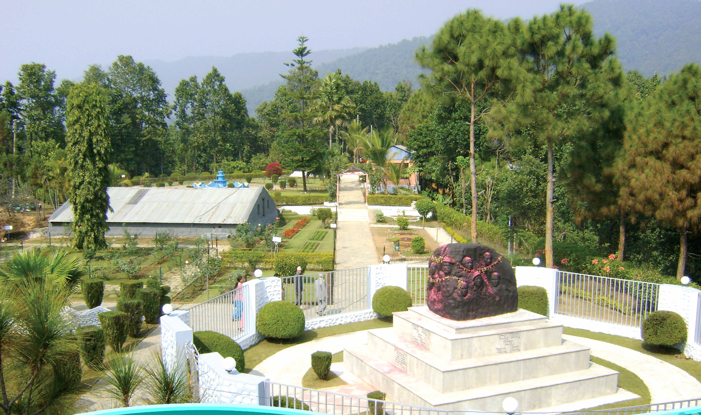

Sahid Smarak Park
This is the unique establishment by the local bodies in honour of the great people of the history who offered their life for nationality, sovereignty, and establishment of democracy in teh country. As one of the major component of this place, there is fascinating image of twelve martyrs in a single stone carving. It is rapidly emerging as one fo the rec\reational venue not only for people of neigh\bouring district but also fot the pwople from different part of country and neighbouring cities of India as well. The increasing number of visitors clearly indicates the bright future of this beautiful place. 
Main Attractions:
- Madan Smarak Garden
- Fountain Park
- Martyrs Statue
- Zoo
- View Tower
- Botanical And Orchid Garden
- Swimming Pool